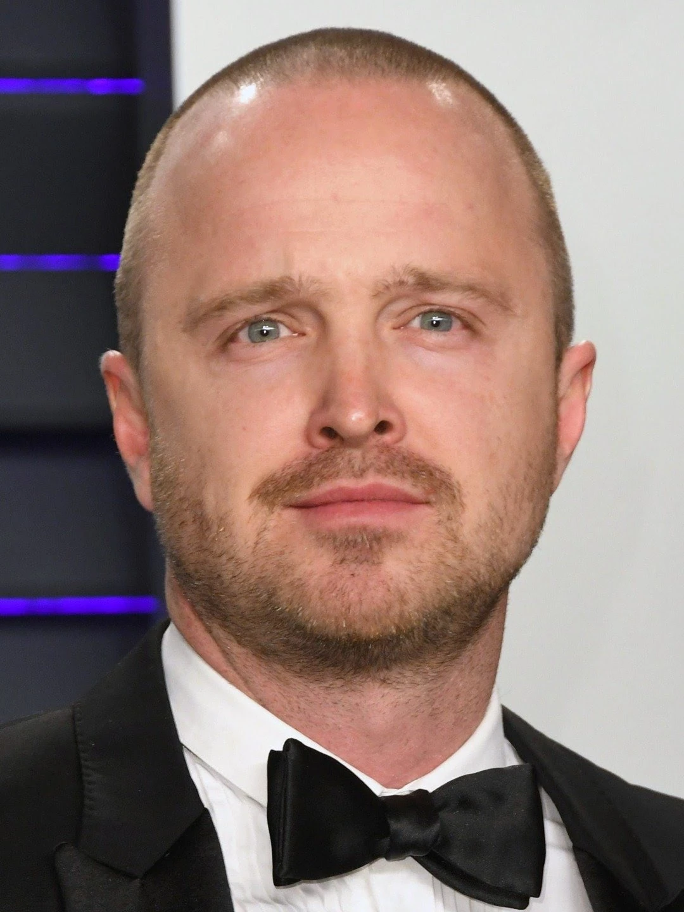
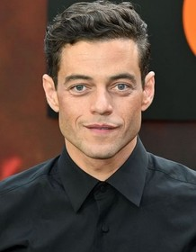
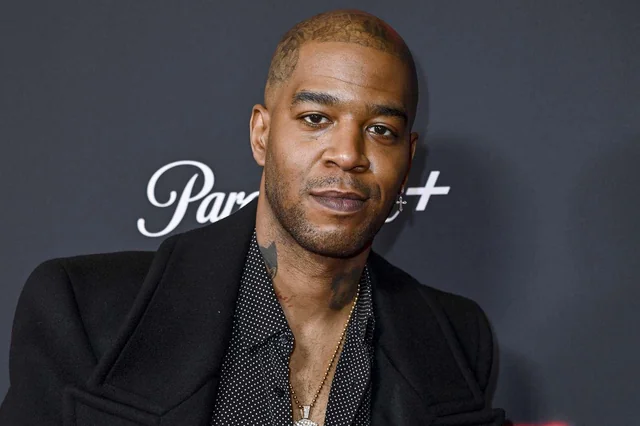
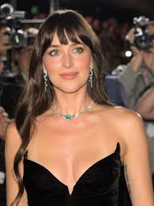
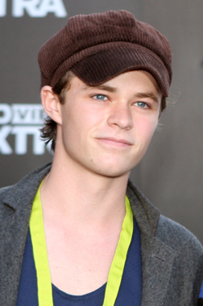

Aaron Paul interpreta a Tobey Marshall, el protagonista de la película. Es un mecánico y corredor callejero con un gran talento para conducir. Su personaje busca justicia luego de ser traicionado y pasar tiempo en prisión, participando en una peligrosa carrera clandestina. Dominic Cooper interpreta a Dino Brewster, el principal antagonista de la historia. Es un corredor ambicioso y arrogante que traiciona a Tobey, lo que desencadena el conflicto principal de la película. Imogen Poots interpreta a Julia Maddon, una mujer inteligente y valiente que acompaña a Tobey en su viaje. Su personaje aporta apoyo y equilibrio a lo largo de la historia. Michael Keaton interpreta a Monarch, un misterioso organizador de carreras clandestinas. Es quien coordina el evento principal de la película y actúa como una figura influyente dentro del mundo de las carreras ilegales. Rami Malek interpreta a Finn, un miembro del equipo de Tobey. Es un personaje más técnico e inteligente, encargado de apoyar en la planificación y logística.




